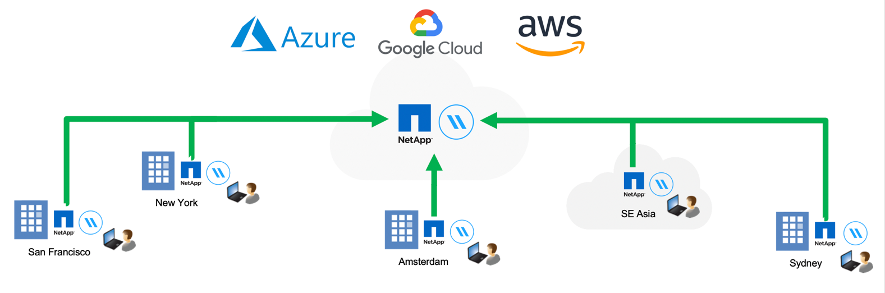

Solicitar cambios en el documento
Solicitar cambios en el documento Editar en GitHub
Editar en GitHub Guía del colaborador
Guía del colaboradorObtenga más información sobre la caché global de archivos
Colaboradores
NetApp Global File Cache le permite consolidar silos de servidores de archivos distribuidos en un espacio de almacenamiento global cohesivo en el cloud público. Esto crea un sistema de archivos con acceso global en la nube que todas las ubicaciones remotas pueden usar como si fueran locales.
Descripción general
La implementación de Global File Cache da como resultado un único espacio de almacenamiento centralizado, frente a una arquitectura de almacenamiento distribuido que requiere gestión de datos local, backup, gestión de la seguridad, almacenamiento e infraestructura en cada ubicación.

Funciones
La caché global de archivos habilita las siguientes características:
-
Consolide y centralice sus datos en el cloud público y en las aplicaciones aproveche la escalabilidad y el rendimiento de las soluciones de almacenamiento de clase empresarial
-
Crear un único conjunto de datos para usuarios de todo el mundo y aprovechar el almacenamiento en caché inteligente de archivos para mejorar el rendimiento, la colaboración y el acceso a los datos
-
Confíe en una caché autosostenible y de gestión automática, y elimine los backups y las copias de datos completas. Utilice el almacenamiento en caché de archivos locales para los datos activos y reduzca el almacenamiento externa
-
Acceso transparente desde sucursales a través de un espacio de nombre global con bloqueo central de archivos en tiempo real
Consulte más información sobre las funciones y los casos de uso de la caché global de archivos "aquí".
Componentes de caché de archivos global
La caché global de archivos consta de los siguientes componentes:
-
Servidor de gestión de caché de archivos global
-
Núcleo de caché de archivos global
-
Global File Cache Edge (puesta en marcha en ubicaciones remotas)
La instancia de almacenamiento central en caché de archivos global se monta en los recursos compartidos de archivos de su empresa alojados en la plataforma de almacenamiento de back-end elegida (como Cloud Volumes ONTAP, Cloud Volumes Service, Y Azure NetApp Files), además de crear la estructura "Fabric" de la caché de archivos global, que permite centralizar y consolidar datos no estructurados en un único conjunto de datos, ya residan en una o varias plataformas de almacenamiento del cloud público.
Plataformas de almacenamiento compatibles
Las plataformas de almacenamiento compatibles con Global File Cache varían en función de la opción de implementación seleccionada.
Opciones de puesta en marcha automatizadas
La memoria caché de archivos global es compatible con los siguientes tipos de entornos de trabajo cuando se implementa usando BlueXP (anteriormente Cloud Manager):
-
Cloud Volumes ONTAP en Azure
-
Cloud Volumes ONTAP en AWS
Esta configuración le permite implementar y administrar toda la implementación del servidor de caché de archivos global, incluido Global File Cache Management Server y Global File Cache Core, desde BlueXP.
Opciones de puesta en marcha manual
Las configuraciones de caché de archivos global también son compatibles con los sistemas Cloud Volumes ONTAP, Cloud Volumes Service, Azure NetApp Files y Amazon FSX para ONTAP instalados en la infraestructura de almacenamiento en cloud público. Las soluciones en las instalaciones también están disponibles en las plataformas AFF y FAS de NetApp. En estas instalaciones, los componentes del servidor de la caché global de archivos deben configurarse e implementarse manualmente, no utilizando BlueXP.
Consulte "Guía del usuario de caché global de archivos de NetApp" para obtener más detalles.
Funcionamiento de la caché global de archivos
Global File Cache crea una estructura de software que almacena en caché los conjuntos de datos activos en oficinas remotas globalmente. Como resultado, se garantiza a los usuarios empresariales un acceso transparente a los datos y un rendimiento óptimo a escala global.
La topología a la que se hace referencia en este ejemplo es un modelo de concentrador y radio, en el que la red de oficinas remotas/ubicaciones está accediendo a un conjunto común de datos en la nube. Los puntos clave de este ejemplo son:
-
Almacenamiento de datos centralizado:
-
Plataforma de almacenamiento en cloud público empresarial, como Cloud Volumes ONTAP
-
-
Estructura de caché de archivos global:
-
Extensión del almacén de datos central a las ubicaciones remotas
-
Instancia central de caché de archivos global, montaje en recursos compartidos de archivos corporativos (SMB).
-
Instancias de Global File Cache Edge que se ejecutan en cada ubicación remota.
-
Presenta un recurso compartido de archivos virtual en cada ubicación remota que proporciona acceso a los datos centrales.
-
Aloja la caché de archivos inteligente en un volumen NTFS de tamaño personalizado (
D:\).
-
-
Configuración de red:
-
Conectividad de conmutación de etiquetas multiprotocolo (MPLS), ExpressRoute o VPN
-
-
Integración con los servicios de dominio de Active Directory del cliente.
-
Espacio de nombres DFS para el uso de un espacio de nombres global (recomendado).
Coste
El coste de uso de la caché de archivos global depende del tipo de instalación que haya elegido.
-
Todas las instalaciones requieren que usted ponga en marcha uno o más volúmenes en el cloud (por ejemplo, Cloud Volumes ONTAP, Cloud Volumes Service o Azure NetApp Files). Esto resulta en cargos del proveedor de cloud seleccionado.
-
Todas las instalaciones también requieren la puesta en marcha de dos o más máquinas virtuales (VM) en el cloud. Esto resulta en cargos del proveedor de cloud seleccionado.
-
Servidor de gestión global de caché de archivos:
En Azure, se ejecuta en una máquina virtual D2S_V3 o equivalente (2 vCPU/8 GB de RAM) con SSD estándar de 127 GB
En AWS, se ejecuta en una instancia m4.Large o equivalente (2 vCPU/8 GB de RAM) con SSD de 127 GB de uso general
-
Núcleo de caché de archivos global:
En Azure, se ejecuta en una máquina virtual d4s_V3 o equivalente (4 vCPU/16 GB de RAM) con 127 GB de SSD premium
En AWS, se ejecuta en una instancia m4.xlarge o equivalente (4 vCPU/16 GB de RAM) con 127 GB de SSD de uso general
-
-
Cuando se instala con Cloud Volumes ONTAP en Azure o AWS (las configuraciones compatibles puestas en marcha completamente mediante BlueXP), hay dos opciones de precios:
-
Para los sistemas Cloud Volumes ONTAP en Azure o AWS, puede pagar 3,000 USD por cada instancia de Global File Cache Edge al año.
-
Como alternativa, en el caso de los sistemas Cloud Volumes ONTAP en Azure, puede elegir el paquete Cloud Volumes ONTAP Edge Cache. Esta licencia basada en capacidad le permite poner en marcha una única instancia global File Cache Edge para cada 3 TIB de capacidad aprovisionada. "Más información aquí".
-
-
Cuando se instala con las opciones de implementación manual, el precio es diferente. Para ver una estimación de costes de alto nivel, consulte "Calcule cuánto puede ahorrar" También puede consultar al ingeniero de soluciones de caché global de archivos si desea obtener más información sobre las mejores opciones para la implementación de su empresa.
Licencia
Global File Cache incluye un servidor de gestión de licencias (LMS) basado en software, que permite consolidar la gestión de licencias e implantar licencias en todas las instancias de Core y Edge mediante un mecanismo automatizado.
Al implementar la primera instancia de Core en el centro de datos o en la nube, puede elegir designar dicha instancia como la LMS para su organización. Esta instancia LMS se configura una vez, se conecta al servicio de suscripción (a través de HTTPS) y valida su suscripción utilizando el ID de cliente proporcionado por nuestro departamento de soporte/operaciones al habilitar la suscripción. Después de realizar esta designación, asocie las instancias de Edge con el LMS proporcionando el ID de cliente y la dirección IP de la instancia de LMS.
Al adquirir licencias Edge adicionales o renovar su suscripción, nuestro departamento de soporte/operaciones actualiza los detalles de la licencia, por ejemplo, el número de sitios o la fecha de finalización de la suscripción. Una vez que LMS consulta al servicio de suscripción, los detalles de la licencia se actualizan automáticamente en la instancia de LMS y se aplican a las instancias de GFC Core y Edge.
Consulte "Guía del usuario de caché global de archivos de NetApp" para obtener más información sobre las licencias.
Limitaciones
La versión de Global File Cache compatible con BlueXP requiere que la plataforma de almacenamiento back-end utilizada como almacenamiento central debe ser un entorno de trabajo donde se haya implementado un único nodo de Cloud Volumes ONTAP o un par de alta disponibilidad en Azure o AWS.
Actualmente, otras plataformas de almacenamiento y otros proveedores de cloud no son compatibles con BlueXP, pero se pueden implementar utilizando procedimientos de puesta en marcha anteriores. Las demás configuraciones, por ejemplo, de caché de archivos global con Cloud Volumes ONTAP o Cloud Volumes Service en Google Cloud, Azure NetApp Files o los sistemas Amazon FSX para ONTAP, son compatibles con procedimientos anteriores. Consulte "Incorporación e información general sobre la caché de archivos global" para obtener más detalles.